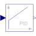
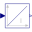
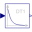
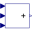

PIDPID-controller in additive description form |

|
Diagram
{kind=link}
Information
This information is part of the Modelica Standard Library maintained by the Modelica Association.
This is the text-book version of a PID-controller. For a more practically useful PID-controller, use block LimPID.
The PID block can be initialized in different ways controlled by parameter initType. The possible values of initType are defined in Modelica.Blocks.Types.Init.
Based on the setting of initType, the integrator (I) and derivative (D) blocks inside the PID controller are initialized according to the following table:
| initType | I.initType | D.initType |
| NoInit | NoInit | NoInit |
| SteadyState | SteadyState | SteadyState |
| InitialState | InitialState | InitialState |
| InitialOutput and initial equation: y = y_start |
NoInit | SteadyState |
In many cases, the most useful initial condition is SteadyState because initial transients are then no longer present. If initType = Init.SteadyState, then in some cases difficulties might occur. The reason is the equation of the integrator:
der(y) = k*u;
The steady state equation "der(x)=0" leads to the condition that the input u to the integrator is zero. If the input u is already (directly or indirectly) defined by another initial condition, then the initialization problem is singular (has none or infinitely many solutions). This situation occurs often for mechanical systems, where, e.g., u = desiredSpeed - measuredSpeed and since speed is both a state and a derivative, it is natural to initialize it with zero. As sketched this is, however, not possible. The solution is to not initialize u or the variable that is used to compute u by an algebraic equation.
Parameters (8)
| k |
Value: 1 Type: Real Description: Gain |
|---|---|
| Ti |
Value: Type: Time (s) Description: Time Constant of Integrator |
| Td |
Value: Type: Time (s) Description: Time Constant of Derivative block |
| Nd |
Value: 10 Type: Real Description: The higher Nd, the more ideal the derivative block |
| initType |
Value: Init.InitialState Type: Init Description: Type of initialization (1: no init, 2: steady state, 3: initial state, 4: initial output) |
| xi_start |
Value: 0 Type: Real Description: Initial or guess value for integrator output (= integrator state) |
| xd_start |
Value: 0 Type: Real Description: Initial or guess value for state of derivative block |
| y_start |
Value: 0 Type: Real Description: Initial value of output |
Connectors (2)
| u |
Type: RealInput Description: Connector of Real input signal |
|
|---|---|---|
| y |
Type: RealOutput Description: Connector of Real output signal |
Components (5)
| P |
Type: Gain Description: Proportional part of PID controller |
|
|---|---|---|
|  | I |
Type: Integrator Description: Integral part of PID controller |
|  | D |
Type: Derivative Description: Derivative part of PID controller |
| Gain |
Type: Gain Description: Gain of PID controller |
|
|  | Add |
Type: Add3 |